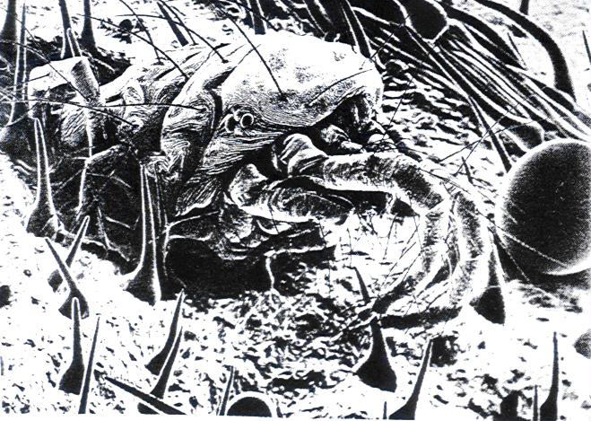

Figure 1-13
At this microscopic level, a world of treacherous, exploding stickum
greets uninvited prowlers. A spider mite is entrapped
in the resin of a broken marijuana nodule. (Photo from Magnifications.
Copyright
© 1977 by David Scharf.
Reprinted by permission of Schocken Books, published by Pantheon
Books,
a Division of Random House, Inc.
and Century Hutchinson, London.)